30/10/2024 — Đau ngực và ST chênh lên hình yên ngựa. Với ca nào trong 6 ca này nên kích hoạt phòng thông tim? Và Queen of Hearts thể hiện ra sao?
Bản dịch tiếng Việt của bài "Chest pain and Saddleback STE. For Which of these 6 Cases should we Activate the cath lab? And how does the Queen of Hearts perform?" – Dr. Smith’s ECG Blog. Giữ nguyên toàn bộ 16 hình ảnh của bản gốc.
Lời giới thiệu của Smith:
ST chênh lên hình yên ngựa (saddleback) thường là một hình ảnh giả OMI, vì vậy cần soi xét thật kỹ những điện tâm đồ này!!
Tác giả: Magnus Nossen
Dưới đây là các điện tâm đồ của sáu bệnh nhân khác nhau. Tất cả bệnh nhân đều gọi đội cấp cứu ngoài viện (EMS) vì đau ngực khởi phát cấp tính. Hãy hình dung bạn nhận được những điện tâm đồ này theo thời gian thực và được hỏi có nên kích hoạt phòng thông tim (cath lab) hay không? Tất cả điện tâm đồ trong ca này đều có ST chênh lên hình yên ngựa. Những điện tâm đồ nào là OMI?
Điện tâm đồ #1

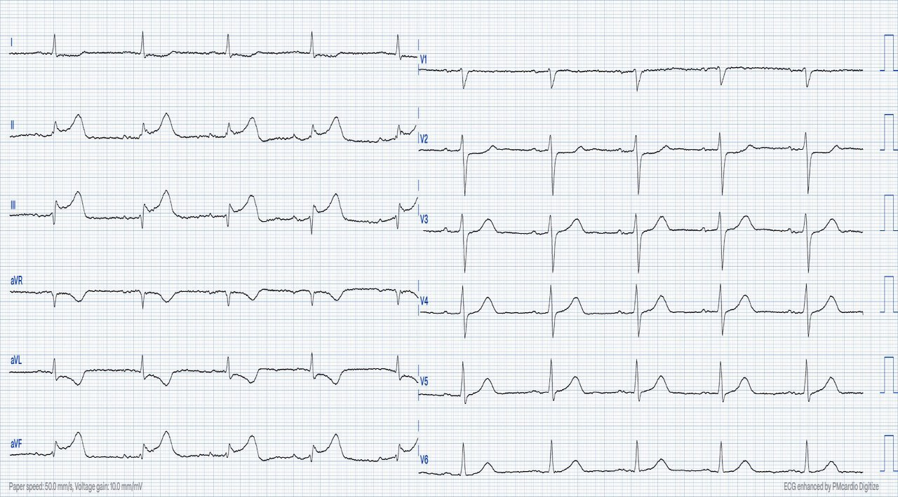
Ca 1. Điện tâm đồ trên là của một bệnh nhân nam ngoài 70 tuổi bị đau ngực. Điện tâm đồ ban đầu được ghi ở tốc độ giấy 50mm/s. Nó đã được nén theo trục X để trông như được ghi ở tốc độ 25mm/s. Bạn nghĩ sao?
Điện tâm đồ #2

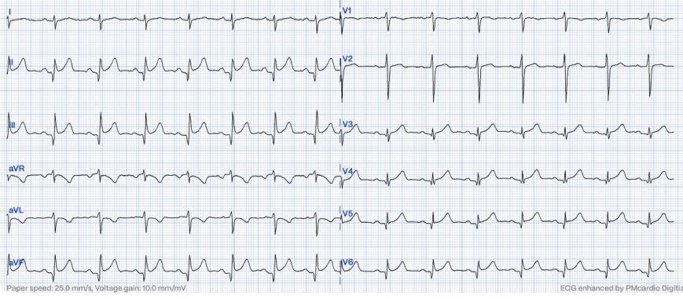
Ca 2: Điện tâm đồ trên được ghi ở một bệnh nhân 45 tuổi mắc đái tháo đường, hút thuốc lá, bị đau ngực. Bạn nghĩ gì về các thay đổi điện tâm đồ ở đây?
Điện tâm đồ #3

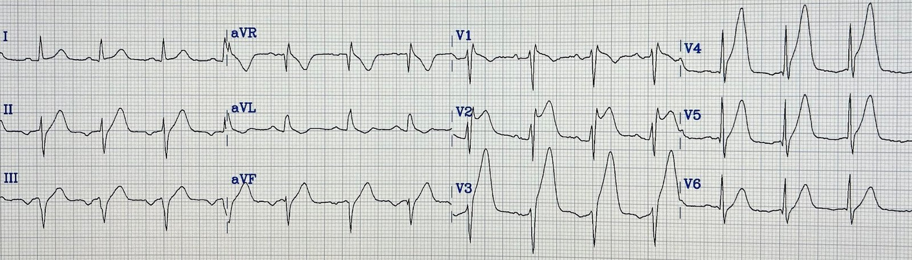
Ca 3. Điện tâm đồ này (ở trên) được ghi ở một bệnh nhân nam 55 tuổi đau ngực khởi phát cấp tính và vã mồ hôi. Bạn sẽ diễn giải điện tâm đồ này như thế nào?
Điện tâm đồ #4

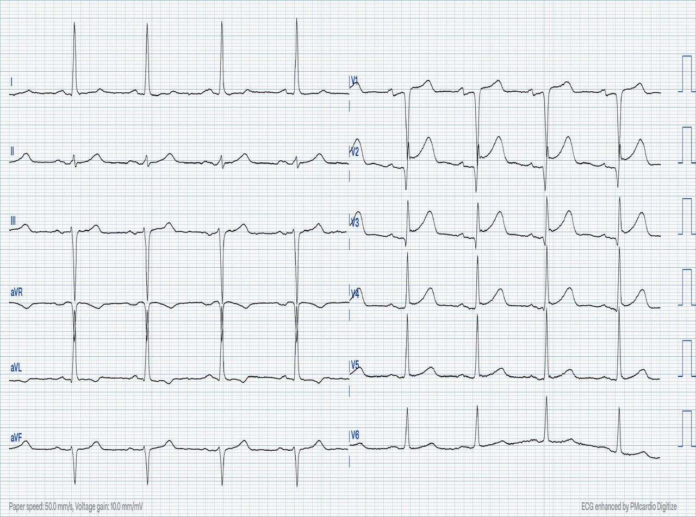
Ca 4: Điện tâm đồ trên là của một bệnh nhân nam ngoài 80 tuổi đau ngực khởi phát cấp tính lan ra sau lưng. Bạn đánh giá các thay đổi điện tâm đồ ở đây như thế nào?
Điện tâm đồ #5

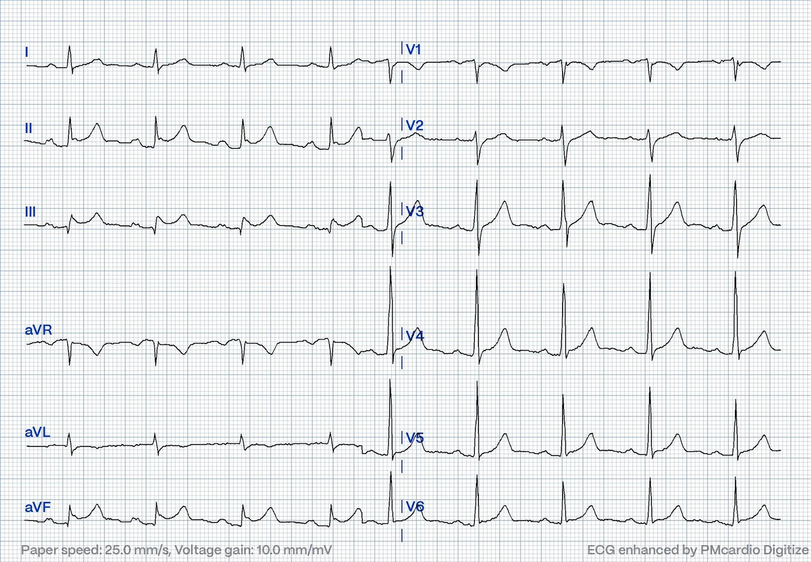
Ca 5: Điện tâm đồ trên được ghi ở một bệnh nhân nam ngoài 50 tuổi đau ngực và đau thượng vị. Những thay đổi điện tâm đồ này là lành tính hay không?
Điện tâm đồ #6

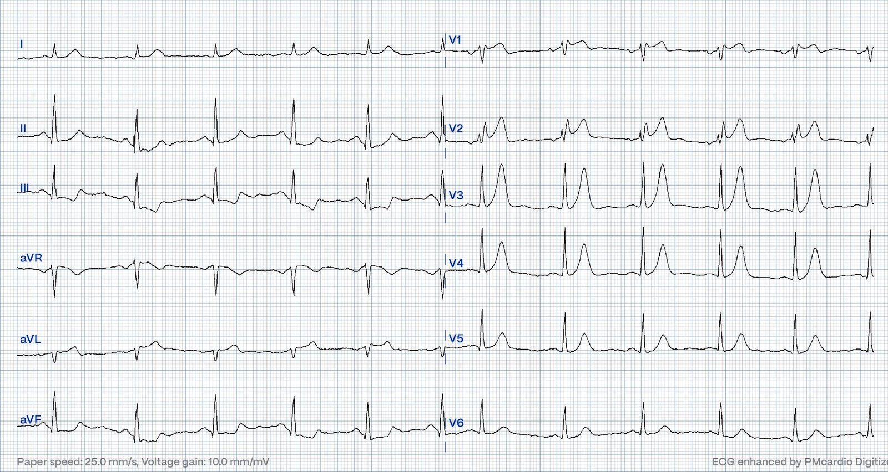
Ca 6: Điện tâm đồ trên được ghi ở một bệnh nhân nam ngoài 70 tuổi có cảm giác khó chịu mơ hồ ở ngực kiểu đè ép. Bạn nghĩ sao?
Bàn luận: Khi bệnh nhân đến khám vì đau ngực và có đoạn ST chênh lên, chúng ta cần đánh giá xem ST chênh lên đó có bản chất thiếu máu cục bộ hay không. Ở điện tâm đồ không thiếu máu cục bộ, đoạn ST và phần đầu sóng T thường có dạng hơi lõm hướng lên trên. Thiếu máu cục bộ thường làm đoạn ST thẳng ra và đôi khi lồi lên trên. Đoạn ST hình yên ngựa thường không có nguồn gốc thiếu máu cục bộ, nhưng cũng như mọi «quy tắc» khác, vẫn có ngoại lệ. Trong bài hôm nay chúng tôi đã trình bày sáu điện tâm đồ, trong đó ba là OMI và ba không phải.
Ca #1 OMI, Queen đọc đúng
Điện tâm đồ cho thấy nhịp xoang với phức bộ QRS hẹp. Có ST chênh lên với hình thái yên ngựa ở các chuyển đạo dưới (II, III và aVF). Các chuyển đạo dưới không có sóng J rõ rệt. Sóng T to bè và trông như sóng T tối cấp. Hơn nữa, các chuyển đạo bên cao aVL và I đều cho thấy ST chênh xuống ngược hướng soi gương và sóng T đảo ngược. Khi xem các chuyển đạo trước tim, có ST chênh xuống nhẹ nhưng nhận thấy được ở chuyển đạo V2 và đoạn ST đẳng điện một cách không phù hợp ở chuyển đạo V3. Tất cả những dấu hiệu này gộp lại khiến điện tâm đồ này có giá trị chẩn đoán nhồi máu cơ tim do tắc (OMI) thành dưới và thành sau
Bệnh nhân trong ca này được điều trị như đang có OMI tiến triển. PCI tiên phát không khả thi nên bệnh nhân được đội cấp cứu ngoài viện cho dùng thuốc tiêu sợi huyết. Bệnh nhân đến khoa cấp cứu (ED) của chúng tôi với điện tâm đồ dưới đây, không còn đau. Như bạn thấy, điện tâm đồ đã thay đổi rõ rệt nhờ điều trị tiêu sợi huyết. Hiện động mạch đã được tái tưới máu.
Điện tâm đồ sau tiêu sợi huyết

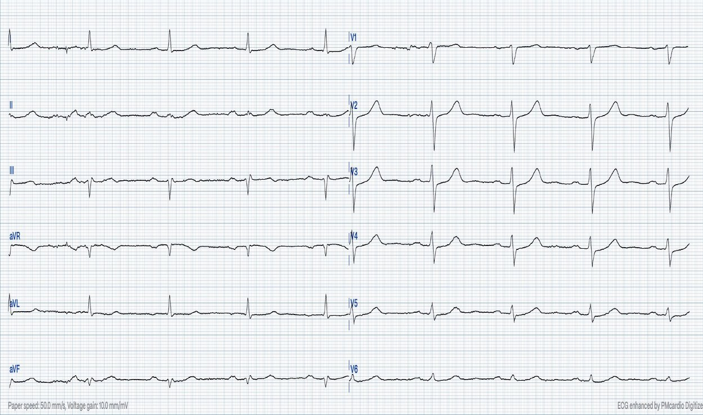
Như bạn có thể thấy, ST chênh lên ở các chuyển đạo dưới đã mất. Vẫn còn sóng T trông như tối cấp ở các chuyển đạo dưới và ST chênh xuống V2-V4. Song song với sự cải thiện trên điện tâm đồ, cơn đau của bệnh nhân cũng giảm hẳn. Điều này tất nhiên chứng minh rằng điện tâm đồ ban đầu là OMI và động mạch đã được tái tưới máu. Khi thông tim muộn hơn trong cùng ngày, một tổn thương thủ phạm hẹp 99% ở RCA đoạn gần đã được đặt stent. Troponin T đạt đỉnh 4051 ng/L. (tham chiếu < 14ng/L)
Nếu điện tâm đồ sau tiêu sợi huyết cho thấy đoạn ST và các thay đổi sóng T trở về bình thường và bệnh nhân hết đau, thì không cần chụp mạch vành (CAG) cấp cứu. Có thể hợp lý khi chờ vài giờ sau tiêu sợi huyết nếu bạn chắc chắn động mạch đã được tái tưới máu. Thử nghiệm GRACIA-2 cho thấy PCI an toàn khi thực hiện 3-12 giờ sau tiêu sợi huyết. Tất nhiên, động mạch đã tái tưới máu có thể tắc lại bất cứ lúc nào, vì vậy những bệnh nhân này cần được theo dõi ST liên tục (ST-guard) và đưa đi thông tim ngay nếu động mạch tắc lại. Kết quả diễn giải của QoH (bên dưới) đối với điện tâm đồ #1 là OMI với độ tin cậy cao.

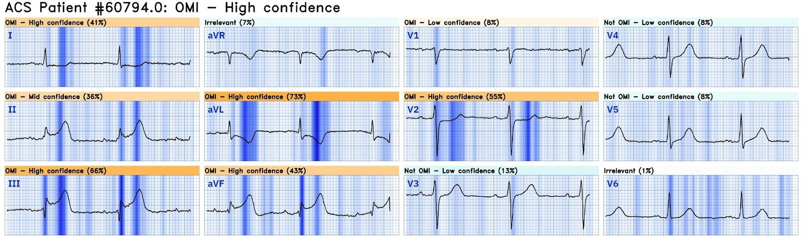
Ca #2 GIẢ (giả OMI), Queen phiên bản 2 đọc đúng
Điện tâm đồ thứ hai trong ca hôm nay được ghi ở một bệnh nhân nam 45 tuổi có tiền sử hút thuốc lá. Một đồng nghiệp đã cho tôi xem điện tâm đồ này và hỏi ý kiến tôi. Tôi nói rằng tôi nghĩ nó trông như hàng giả (nói cách khác là một hình ảnh giả OMI). Tôi đã gửi điện tâm đồ này cho nhóm EKG Nerdz. Bạn có thể xem một số câu trả lời bên dưới.

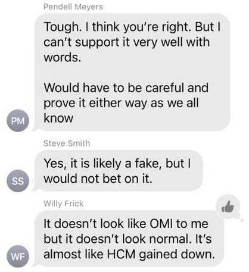
Bệnh nhân được loại trừ nhờ các xét nghiệm troponin liên tiếp đều âm tính. Siêu âm tim không có rối loạn vận động thành. Sau đó tìm được một điện tâm đồ cũ cho thấy các dấu hiệu tương tự. Điện tâm đồ #2 quả thật có ST chênh xuống và sóng T đảo ngược ở chuyển đạo aVL, giống như điện tâm đồ đầu tiên trong ca hôm nay. Bạn có thể hỏi: tại sao ST chênh xuống soi gương này lại không gợi ý thiếu máu cục bộ?. Đoạn ST và sóng T ở chuyển đạo aVL đồng hướng với phức bộ QRS. Đây là một khác biệt quan trọng, và do đó sóng T đảo ngược thấy ở aVL không thể được coi là có cùng ý nghĩa như ở ca đầu tiên trong bài hôm nay. (Xem bình luận của Dr. Smith bên dưới để hiểu sâu hơn). Ngoài ra, không có dấu hiệu thiếu máu cục bộ thành sau (ST chênh xuống) ở các chuyển đạo V2-V4.
Smith: Có một ít ST chênh xuống (STD) soi gương ở aVL. STD soi gương ở aVL đôi khi gặp ở điện tâm đồ không thiếu máu cục bộ, nhưng hầu như không bao giờ gặp trong viêm màng ngoài tim (Bischof và cs.). Hơn nữa, sóng T đảo ngược ở aVL là dấu hiệu bình thường vì trục QRST bình thường; nghĩa là trục QRS và trục sóng T gần nhau. Trục QRS khoảng 110 độ và trục sóng T khoảng 80 độ (điều này đánh giá tốt nhất ở chuyển đạo I, nơi có sóng S > sóng R (trục lệch phải) nhưng sóng T dương (hướng về phía chuyển đạo I nhiều hơn là ra xa chuyển đạo I). Chênh lệch chỉ 30 độ, và đến 45 độ vẫn là bình thường. “Sóng T đảo ngược” thực sự có góc QRST rộng.
Mô hình AI Queen of Hearts phiên bản 1 diễn giải điện tâm đồ #2 là OMI với độ tin cậy cao. Phiên bản 2.0 (chưa phát hành) được cho xem đúng điện tâm đồ đó và kết quả diễn giải là không phải OMI.
Hình dưới đây cho thấy QoH phiên bản 1 diễn giải điện tâm đồ là OMI với độ tin cậy cao (giá trị gần 1 ở dòng trên cùng). Phiên bản 2 diễn giải điện tâm đồ là không phải OMI với độ tin cậy cao (giá trị gần 0 ở dòng thứ hai). Thật đáng chú ý khi mô hình AI đã thay đổi nhiều đến vậy trong cách diễn giải cùng một điện tâm đồ. Giờ đây nó nhận định đúng và tự tin rằng điện tâm đồ #2 không phải OMI

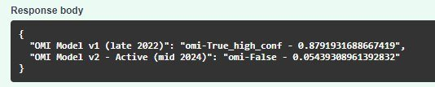
Ca #3 OMI, Queen đọc đúng
Điện tâm đồ này cho thấy nhịp xoang với phức bộ QRS hẹp. Có RBBB không hoàn toàn (rSr` ở V1). Có blốc phân nhánh trái trước (QRS âm ở chuyển đạo II). Chuyển đạo V2 cho thấy ST chênh lên hình yên ngựa. Ở các chuyển đạo V2-V5 có ST chênh lên và sóng T tối cấp to bè (rất ấn tượng). Ở các chuyển đạo dưới (II, III aVF) và bên (I, aVL và V6) có sóng T tối cấp. Điện tâm đồ này hoàn toàn có giá trị chẩn đoán OMI thành trước và thành dưới, và phù hợp với một LAD "vòng qua mỏm" (wraparound) cấp máu cho cả thành trước và thành dưới.

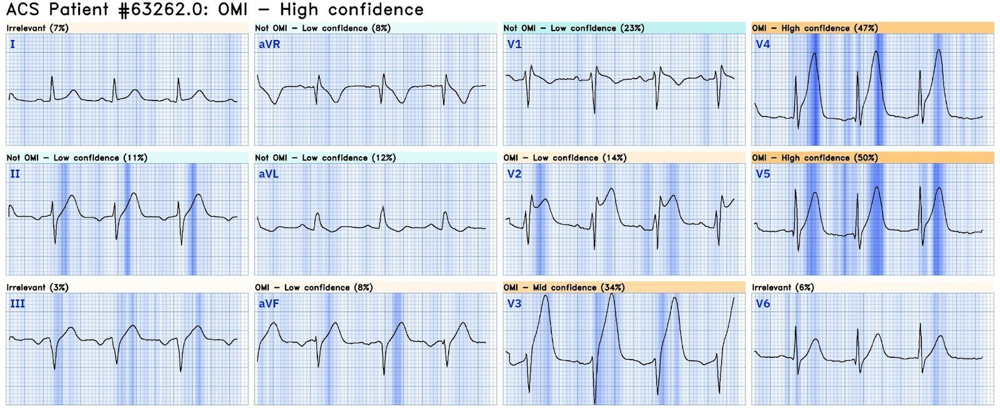
Smith: Đại đa số trường hợp ST chênh lên (STE) hình yên ngựa ở chuyển đạo V2 KHÔNG do OMI cấp. Cho đến nay tôi mới chỉ có 2 ca như vậy trên blog này (giờ là 3!). May mắn là ca này rất rõ ràng!
Ca #4 GIẢ (giả OMI) Queen đọc đúng
Tôi đang trực khi nhận được điện tâm đồ trước viện này. Bệnh nhân là một người đàn ông 80 tuổi đau ngực và lưng khởi phát cấp tính. Điện tâm đồ cho thấy ST chênh lên đáng kể. Tôi khá lo rằng điện tâm đồ này là OMI và đã kích hoạt phòng thông tim. Điện tâm đồ cho thấy phức bộ qR ở các chuyển đạo V2-V3 với đoạn ST chênh lên dạng lõm hướng lên. ST chênh lên hình yên ngựa ở V2 hiếm khi do OMI. Một nguyên nhân phổ biến hơn nhiều của ST chênh lên hình yên ngựa ở V1-V3 là các điện cực bị đặt quá cao trên ngực, và điều này luôn cần được kiểm tra. Ở đây, cực tính sóng P ở V1 và V2 phù hợp với vị trí đặt điện cực đúng. (Nếu V1 và V2 đặt quá cao, sóng P ở các chuyển đạo này thường có cực tính âm)
Có lúc tôi đã nghĩ điện tâm đồ có thể là LVH, nhưng khi đó tôi sẽ chờ đợi ST chênh lên ngược hướng (một cách phù hợp) nhiều hơn một chút ở các chuyển đạo dưới. Tôi lo rằng điện tâm đồ là một dạng OMI thành trước kỳ lạ nào đó với đoạn ST đẳng điện soi gương ở các chuyển đạo dưới. Tôi không tin chắc rằng các thay đổi điện tâm đồ là OMI, nhưng tôi thấy mình phải chứng minh được là không phải. Sẽ là một sai lầm khủng khiếp nếu bỏ sót trường hợp này trong khi nó là tắc mạch.
Chụp mạch vành (CAG) cho thấy bệnh LAD đáng kể ở đoạn giữa. Tuy nhiên, không có thành phần huyết khối và có dòng chảy TIMI III ở tất cả các động mạch vành và các nhánh chính của chúng. Tóm lại, kết quả CAG được diễn giải là có bệnh xơ vữa đáng kể, nhưng không được cho là có khả năng gây ra các thay đổi điện tâm đồ. PCI đã được thực hiện vì tổn thương có ý nghĩa. Điện tâm đồ sau PCI không thay đổi. Troponin T lấy năm giờ sau khởi phát triệu chứng là 17ng/L. Nồng độ troponin không tăng đáng kể. Dưới đây là điện tâm đồ và siêu âm tim sau PCI. Chụp CT đã được thực hiện trong quá trình đánh giá, nhưng không xác định được nguyên nhân rõ ràng gây đau ngực của bệnh nhân.

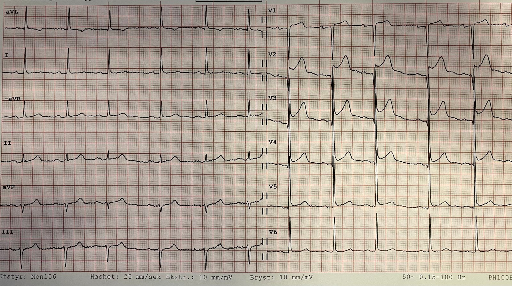
Bên dưới: điện tâm đồ ghi sau PCI

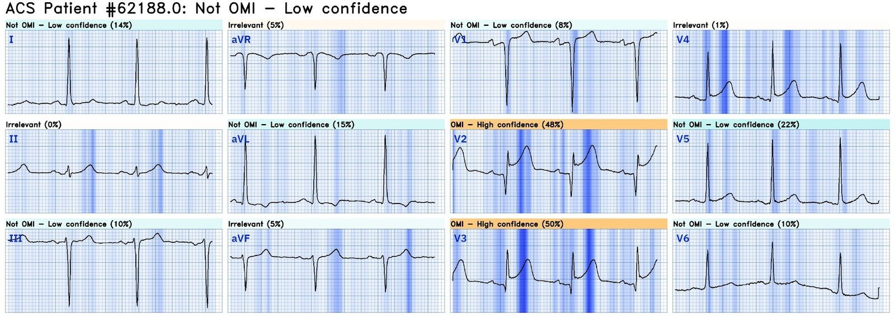
Queen thật tuyệt vời!
Ca #5: GIẢ (giả OMI), Queen đọc đúng.
Bệnh nhân này đến khám vì khó chịu ở bụng. Nhồi máu cơ tim thành dưới có khả năng gây triệu chứng ở bụng cao hơn một chút so với nhồi máu ở các vùng cơ tim khác. Điện tâm đồ cho thấy ST chênh lên ở các chuyển đạo dưới. Có sóng T đảo ngược rất ít ở chuyển đạo aVL. Nếu đây là nhồi máu cơ tim thành dưới, ta sẽ chờ đợi thay đổi soi gương rõ rệt hơn nhiều ở các chuyển đạo bên (đối chiếu với ca #1). Ngoài ra, các chuyển đạo II và aVF có sóng J khá rõ, vốn nhìn chung thường gặp hơn với ST chênh lên không do thiếu máu cục bộ. Bệnh nhân này được loại trừ nhờ các xét nghiệm troponin liên tiếp. Dưới đây là kết quả diễn giải của QoH.

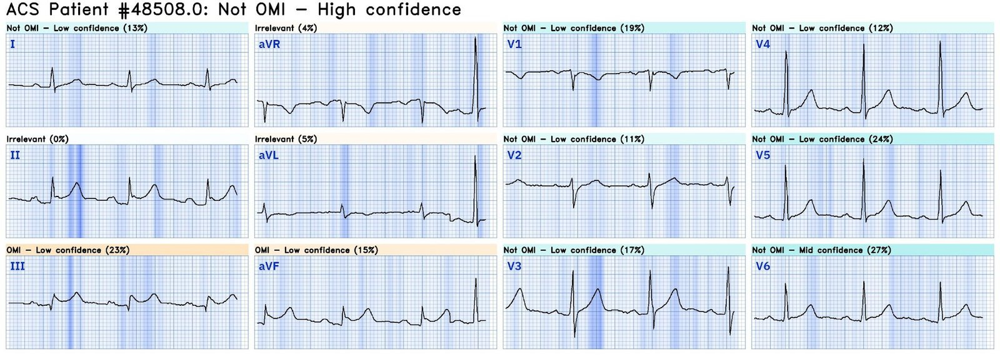
Ca #6: OMI, Queen đọc đúng
Điện tâm đồ này cho thấy nhịp xoang khoảng 60 lần/phút. Có ST chênh lên hình yên ngựa ở các chuyển đạo V1 và V2. Sóng T ở khắp các chuyển đạo trước tim là sóng T tối cấp với hình dạng de Winter ở chuyển đạo V3-V4. Sóng P ở chuyển đạo V1 và chuyển đạo V2 phần lớn âm, cho thấy STE hình yên ngựa ở hai chuyển đạo này là do đặt điện cực sai vị trí (quá cao).
Dù sao đi nữa, các dấu hiệu chính trên điện tâm đồ này là sóng T khổng lồ (tối cấp) ở các chuyển đạo trước tim và ST chênh xuống soi gương ở các chuyển đạo dưới. Điện tâm đồ này hoàn toàn có giá trị chẩn đoán tắc LAD. Các dấu hiệu này đã được nhận ra và bệnh nhân được đưa thẳng tới phòng thông tim, nơi một LAD đoạn gần tắc hoàn toàn đã được tái thông. Troponin T độ nhạy cao đạt đỉnh gần 15.000ng/L (tham chiếu <14ng/L). Dưới đây là kết quả diễn giải của Queen of Hearts.

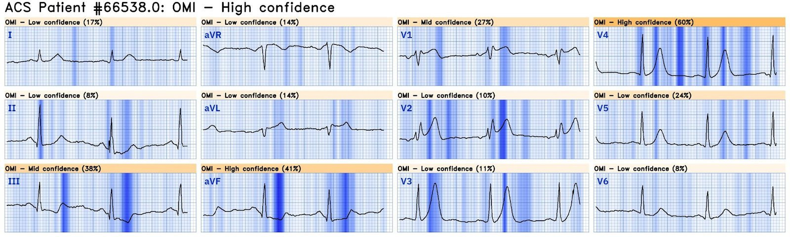
Bấm vào đây để đăng ký quyền truy cập Queen of Hearts.
Những điểm cần học:
- Điều trị tiêu sợi huyết được khuyến cáo nếu PCI tiên phát không phải là một lựa chọn. Thuốc tiêu sợi huyết càng hiệu quả khi được dùng càng sớm sau khởi phát triệu chứng.
- Thuốc tiêu sợi huyết sẽ tạo được dòng chảy TIMI III ở động mạch thủ phạm ở chỉ hơn 50% bệnh nhân tại thời điểm 90 phút.
- Phần lớn các trường hợp ST chênh lên hình yên ngựa không do thiếu máu cục bộ, nhưng một số thì có, và nhiệm vụ của chúng ta với tư cách nhân viên y tế là nhận ra những bệnh nhân có động mạch vành bị tắc
- Luôn nghĩ tới việc đặt điện cực (quá cao) như một nguyên nhân của ST chênh lên hình yên ngựa nếu dấu hiệu này có ở chuyển đạo V1-V2
Gonzalez, P. E., Omar, W., và cs. (2020). Fibrinolytic strategy for ST-Segment–Elevation myocardial infarction. (Chiến lược tiêu sợi huyết trong nhồi máu cơ tim ST chênh lên.) Circulation Cardiovascular Interventions, 13(9).
Dudek, D., Rakowski, T., Dziewierz, A., & Kleczynski, P. (2008). PCI after lytic therapy: when and how? (PCI sau điều trị tiêu sợi huyết: khi nào và như thế nào?) European Heart Journal Supplements, 10

===================================
BÌNH LUẬN CỦA TÔI, bởi KEN GRAUER, MD (30/10/2024):
===================================
Trong ca hôm nay — Dr. Nossen thách thức chúng ta quyết định có kích hoạt ngay phòng thông tim hay không đối với một loạt 6 điện tâm đồ, lấy từ 6 bệnh nhân có triệu chứng khiến họ phải gọi đội cấp cứu ngoài viện. Tôi nghĩ mình sẽ bổ sung thêm một góc nhìn về cách tôi tiếp cận thử thách này.
- Những ai trong chúng ta đã quen với một hình thức nào đó của “kiểm tra năng lực khách quan” — có lẽ đã tiếp cận thử thách hôm nay theo cách tương tự như tôi — rằng nhiều khả năng một số (nhưng không phải tất cả) trong 6 bản ghi này là OMI cấp cần thông tim kịp thời — nhưng vài bản ghi thì không, và có thể có những “dấu hiệu mơ hồ” (có thể nhằm đánh lạc hướng chúng ta) được cài vào dọc đường.
Không chỉ ép bản thân phải cam kết với một quyết định “nhị phân” nhanh chóng (tức là, hoặc OMI cấp cần thông tim kịp thời! — hoặc — không phải OMI cấp, do đó không cần kích hoạt phòng thông tim ngay) — tôi sẽ đề xuất thêm một lựa chọn lâm sàng, cụ thể là — BẠN sẽ làm gì? (tức là, nếu bạn là người chịu trách nhiệm lâm sàng xử trí từng bệnh nhân trong 6 bệnh nhân này?).
- Lý do tôi đề xuất thêm cách tiếp cận lâm sàng này cho thử thách điện tâm đồ hôm nay là: i) Cả 6 điện tâm đồ này đều cho thấy ST chênh lên “hình yên ngựa” và những dấu hiệu điện tâm đồ đáng chú ý khác cần được nhận ra; và, ii) Quyết định “Làm gì?” — không phải là một quyết định “nhị phân” (tức là, OMI hay không OMI ) — mà còn bao gồm một lựa chọn thứ 3, đó là chúng ta chưa thể loại trừ một OMI cấp tiềm tàng.
Điểm MẤU CHỐT: Sai sót rõ ràng nhất mà tôi đã thấy trong suốt hơn 7 năm (7+) tôi có vinh dự được xem xét các ca điện tâm đồ gửi tới Dr. Smith’s ECG Blog — là việc thấy nhân viên y tế không làm gì trong nhiều giờ (hoặc lâu hơn) ở những bệnh nhân có triệu chứng mà điện tâm đồ ban đầu không “bình thường” (dù chưa thỏa mãn tiêu chuẩn của một STEMI rõ ràng ).
- “Không sao” — nếu không nhất thiết nhận ra được tất cả các dấu hiệu cấp tính tinh tế mà chúng tôi nhấn mạnh trên Dr. Smith’s ECG Blog.
- “Không ổn” — nếu không nhận ra những bệnh nhân nguy cơ cao hơn có điện tâm đồ ban đầu bất thường, đòi hỏi phải đánh giá bổ sung ngay lập tức cho đến khi có thể đưa ra quyết định dứt khoát về việc có kích hoạt phòng thông tim hay không.
- Nhắc lại: Ngay cả các chuyên gia cũng không phải lúc nào cũng biết chắc chắn 100% liệu điện tâm đồ ban đầu có phải là một OMI cấp đang diễn ra hay không. Vì vậy — Chúng ta cần nhớ lựa chọn thứ 3, trong đó mục tiêu là xác định những bệnh nhân mà điện tâm đồ ban đầu có thể là một OMI cấp đang diễn ra — những người mà ta cần đẩy nhanh việc đánh giá bổ sung để đi đến kết luận dứt khoát nhanh nhất có thể.
==================================
Chính với những nguyên tắc trên trong đầu — tôi đã xem xét 6 điện tâm đồ đầy thử thách này.
Điện tâm đồ #1:
- Các chuyển đạo chi gợi ý STEMI thành dưới cấp — đã có sóng Q lớn ở chuyển đạo III (khó nói có sóng Q ở aVF hay không — hay đây là phức bộ rsR’).
- Dấu hiệu “kỳ diệu” mà chúng tôi thường nhấn mạnh — thay đổi ST-T ngược chiều như hình ảnh soi gương ở chuyển đạo III và aVL — xác nhận chẩn đoán STEMI thành dưới cấp (thay đổi soi gương cũng thấy ở chuyển đạo I ).
- Việc RCA là động mạch “thủ phạm” — được gợi ý bởi: i) ST chênh lên ở III > II; — ii) ST chênh xuống rõ ở aVL; và, iii) Không có ST chênh lên ở V6 (như có thể gặp khi thủ phạm là LCx).
- Với tôi — mức chắc chắn OMI 99+% đạt được nhờ sự hiện diện đồng thời của OMI thành sau cấp (ST dẹt và chênh xuống ở chuyển đạo V2,V3).
Điện tâm đồ #2:
- Mặc dù có sóng Q ở các chuyển đạo dưới kèm ST chênh lên — tôi nghĩ đây là một trường hợp “giả” vì: i) QRS ở chuyển đạo aVL chủ yếu âm — nên sóng T đảo ngược tương đối nông không hẳn là bất thường (so với ST-T chênh xuống sâu hơn nhiều ở chuyển đạo aVL trong điện tâm đồ #1); — ii) Chuyển đạo I gợi ý trục lệch phải (điều ít gặp hơn nhiều trong nhồi máu thành dưới đơn thuần) — và hoàn toàn không có thay đổi soi gương ở chuyển đạo I; — iii) Không có gợi ý tổn thương thành sau; — và, iv) Sóng ST-T ở các chuyển đạo V3,V4,V5,V6 đều trông gần như giống hệt sóng ST-T ở các chuyển đạo II,III,aVF — trong đó V4,V5,V6 có hình dạng gần như y hệt các chuyển đạo II,III,aVF, với sóng Q và ST-T chênh lên/nhọn trông giống hệt nhau. Ngược lại — OMI cấp thường khu trú! (và ít khả năng tạo ra một hình ảnh QRST gần như giống hệt nhau ở 7/12 chuyển đạo! ).
- Lưu ý rằng các bác sĩ Nossen, Meyers, Smith và Frick đều nghĩ đây có lẽ là một trường hợp “giả” — nhưng tất cả chúng tôi đều nhấn mạnh mức độ chắc chắn dưới 100% khi chỉ dựa vào một điện tâm đồ duy nhất này.
- Dù vậy — điểm quan trọng là chỉ cần vài thao tác đơn giản là chúng ta đạt được mức chắc chắn 100% trong một khoảng thời gian rất ngắn (tức là, tìm một điện tâm đồ cũ của bệnh nhân này để so sánh — troponin liên tiếp — siêu âm tim khẩn — và ghi lại điện tâm đồ này trong vòng 10 đến 20 phút).
- LƯU Ý: Điện tâm đồ #2 này không phải là một bản ghi bình thường. Thay vì OMI cấp — ban đầu tôi nghi ngờ viêm cơ tim cấp do có sóng Q lan tỏa kèm ST chênh lên mà không khu trú. Đây sẽ là một bệnh nhân mà tôi muốn tìm hiểu TẠI SAO điện tâm đồ không phải OMI này lại trông bất thường đến vậy.
Điện tâm đồ #3:
- Ca này dễ (tức là, tôi mất chưa đến 5 giây) vì: i) Bệnh sử điển hình ( = nam 55 tuổi, đau ngực khởi phát đột ngột kèm vã mồ hôi); — ii) Không chỉ có sóng T dương biên độ khổng lồ (≥18 mm ở V3,V4) — mà các sóng T tối cấp này còn cực kỳ rộng ở chân; — iii) Tính cả các chuyển đạo dưới — có 9/12 chuyển đạo có sóng T tối cấp + ST chênh lên ở các chuyển đạo trước + mất sóng R từ chuyển đạo V2 sang V3 + blốc nhánh phải không hoàn toàn kèm LAHB — mà ở bệnh nhân này với đau ngực dữ dội mới xuất hiện thì chẩn đoán chắc chắn 100% OMI cấp do tắc LAD đoạn gần.
Điện tâm đồ #4:
- Ca này là một ví dụ hoàn hảo về một câu trả lời không nhị phân — ở chỗ dù tôi không nghĩ điện tâm đồ này thể hiện một OMI cấp — tôi không chắc chắn 100% (điều đó vẫn ổn miễn là chúng ta nhanh chóng loại trừ một biến cố cấp — điều đã được thực hiện ở ca này bằng thông tim, cho thấy bệnh LAD đáng kể nhưng không có OMI cấp ).
- LVH hiện diện rõ ràng theo điện thế (sóng R tăng rõ rệt ở các chuyển đạo I,aVL và sóng S quá sâu ở chuyển đạo III ) — với “tăng gánh” thất trái thấy rõ ở chuyển đạo aVL, cùng một hình ảnh “tương đương tăng gánh” ở chuyển đạo I.
- Sóng Q sâu ở các chuyển đạo V2,V3 chắc chắn là bất thường, đi kèm với ST chênh lên rõ rệt ở các chuyển đạo này (và ở mức độ ít hơn ở chuyển đạo V4).
- Dù vậy — với tôi, bức tranh tổng thể không “trông” cấp tính — và bệnh sử “đau ngực lan ra sau lưng“ ở người đàn ông ngoài 80 tuổi có LVH rõ rệt — khiến tôi cân nhắc mạnh mẽ bóc tách động mạch chủ là một nguyên nhân nhiều khả năng hơn.
- Không có một điện tâm đồ cũ để so sánh — sẽ không có cách nào biết NẾU các thay đổi điện tâm đồ nêu trên là mới hay cũ. Và, ngay cả khi có bóc tách động mạch chủ cấp — bóc tách vẫn có thể gây tắc một động mạch vành. Vì vậy, dù tôi nghĩ OMI cấp như một biến cố nguyên phát là ít khả năng hơn khi dựa vào một điện tâm đồ duy nhất này — vẫn cần đánh giá thêm để xác nhận nhận định của tôi. (Bóc tách động mạch chủ dường như đã được loại trừ nhờ chụp CT âm tính).
Điện tâm đồ #5:
- Ca này minh họa thêm một ví dụ về một câu trả lời không nhị phân — ở chỗ dù tôi không nghĩ điện tâm đồ này thể hiện một OMI cấp — tôi không chắc chắn 100%. Vì vậy — cần đánh giá thêm (và việc này đã loại trừ một biến cố cấp).
Những lý do khiến tôi không nghĩ điện tâm đồ này thể hiện một OMI cấp là:
- i) Hình dạng của ST chênh lên biểu hiện độ lõm hướng lên (tức là, cấu hình “mặt cười”).
- ii) Theo bác sĩ Nossen — có khía điểm J ở chuyển đạo II — và “trát đậm” phần cuối ở các chuyển đạo III và aVF (mà như trong Bình luận của tôi ở các bài ngày 15 tháng Mười năm 2024 và ngày 23 tháng Năm năm 2022 — thường đóng vai trò là dấu hiệu “tương đương” khía điểm J của một biến thể tái cực, đặc biệt khi đi kèm với đoạn ST dốc lên nhanh).
- iii) Một sóng Q đơn độc ở chuyển đạo III (như ta thấy ở đây) — không hẳn là bất thường.
- iv) Sóng T đảo ngược rất nông ở chuyển đạo aVL này (nơi QRS gần như hai pha) — không đủ tiêu chuẩn là ST chênh xuống “soi gương”.
- v) QTc hoàn toàn không tăng.
- vi) Không có dấu hiệu OMI thành sau (tức là, Có ST chênh lên nhẹ tại điểm J, dốc lên thoai thoải ở các chuyển đạo V2 và V3 — như bình thường vẫn có).
- vii) Tăng tiến sóng R bình thường, với biên độ sóng R tốt.
Điện tâm đồ #6:
- Điện tâm đồ này rõ ràng bất thường vì: i) Có ST chênh xuống ở cả 3 chuyển đạo dưới (kèm sóng T hai pha dạng xuống-lên ở III và aVF); — ii) Có ST chênh lên ở chuyển đạo aVL (có thể kèm sóng T tối cấp); — iii) Có ST chênh lên ở các chuyển đạo V1 và V2 — với sóng T dương, rất cao ở các chuyển đạo V2,V3,V4.
- NẾU bệnh sử là “đau ngực dữ dội khởi phát đột ngột” — tôi sẽ lập tức nghĩ tới OMI cấp do tắc LAD, cần thông tim ngay.
- Dù vậy — bệnh sử được cung cấp cho chúng ta ghi, “nam ngoài 70 tuổi, khó chịu ở ngực dạng đè ép mơ hồ”. Không có thông tin về thời điểm “khởi phát” triệu chứng. Vì vậy — đây là một ca mà tôi muốn nhanh chóng thu thập thêm thông tin để xác minh xem liệu, dù chỉ khó chịu ở ngực “mơ hồ” — có một biến cố cấp đang diễn ra hay không. ‘Đôi khi bạn phải có mặt ở đó mới biết!” — và có thể chỉ một cái liếc nhìn bệnh nhân trong 2 giây đã cho thấy ngay lập tức mức độ cấp tính.
- Dù thế nào đi nữa — các dấu hiệu trên điện tâm đồ #6 nổi bật đến mức chỉ nên mất vài phút là cùng để chỉ định troponin khẩn — ghi lại điện tâm đồ (và tìm một bản ghi cũ) — và làm siêu âm tim tại giường.